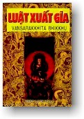

|
BuddhaSasana Home Page |
Vietnamese, with Unicode Times font |
|  |
THERAVÀDA - PHẬT-GIÁO NGUYÊN-THỦY LUẬT
XUẤT-GIA TÓM TẮT
|
-ooOoo- TIỂU TỰA Khi Phật sắp nhập Niết-bàn ông ANANDA và ông UPÀLI, có đến hỏi Phật: Bạch Ðức Thế-tôn sau khi Phật diệt độ, chúng tôi phải tôn ai làm thầy? Phật dạy: "Phải tôn giới Ba-la-đề mọc-xa làm thầy.". "Ba-la-đề mọc-xa" (Pàtimokkha) Tàu dịch là: "Biệt-biệt giải-thoát", nghĩa là giữ được một giới luật thì thoát khỏi được một tội. Phật lại nói: Như-lai chế ra điều-học có mười điều lợi ích là:
Chư tỳ-khưu vui thích trong sự xuất gia, nên ghi nhớ cho rõ các quả vui đều phát sanh do sự thông hiểu Giới luật trước cho có đức tin bền chắc trong giới-luật và cần phải thực hành theo cho thuần thục Người thông hiểu giới luật ví như cha mẹ như nơi nương nhờ của tất cả hạng người tín-ngưỡng Phật-pháp. Những người đã thọ Sa-di¸ hoặc Tỳ-khưu giới thực hành theo điều trọng và điều khinh và biết rõ nơi nào nên tới lui, hoặc không nên tới lui [1], cũng đều nương theo người thông hiểu "giới-luật "ấy. Người mà giữ giới trong sạch đáng làm nơi nương nhờ cho hàng Phật-tử mong tìm sự an vui, thì hằng đượïc tươi tĩnh, nói năng trong khi hội họp, không chút chi e ngại. Người trì-giới có thể cảm hóa kẻ nghịch trở thuận làm cho Phật-pháp được hưng thạnh lâu dài. Lại nữa Giới-Luật có lợi-ích phát sanh "sự thu thúc" (Samvara). Thu thúc có lợi ích phát sanh sự "không bất bình "(Vipatisàra). Không bất-bình có lợi ích phát sanh "sự thỏa thích" (Pàmojja). Thỏa-thích có lợi ích phát sanh "sự no-lòng" (Pìti). [2] No lòng có lợi ích phát sanh "tâm yên lặng" (Passaddhi). Yên-lặng có lợi ích phát sanh "điều an-lạc" (Sukha). An-lạc có lợi ích phát sanh "thiền định" (Samàdhi). Thiền định có lợi ích phát sanh "sự hiểu biết rõ cả pháp theo chơn lý" (Yathàbhùtannànadassana). Hiểu biết rõ các pháp theo chơn-lý có lợi-ích phát sanh "sự chán nản đối với chúng sanh và vật" (Nibbidà). Chán-nản trong chúng sanh và vật có lợi ích phát sanh "sự xa lìa tình-dục" (Viraga). Xa lìa tình-dục có lợi-ích phát sanh "sự giải thoát khỏi phiền não" (Vimutti). Giải thoát khỏi phiền não có lợi-ích phát sanh "sự hiểu biết rõ rằng được giải-thoát" (Vimuttinànadassana). Hiểu biết rõ rằng được giải-thoát có lợi ích phát sanh "sự dứt khổ vì hết cố chấp" (Anupàdàparinibbàna). Quả báo mà phải được theo thứ tự ấy, đều do sự trì giới-luật cả. Cớ ấy, hành giả muốn được an-vui tuyệt đối ở cảnh Niết-bàn, chỉ nên tinh tấn vâng giữ giới luật và hết lòng thực hành theo cho chín chắn ắt được như nguyện chẳng sai. Mong sao cho tất cả thân quyến chúng ta trong vũ-trụ được an vui lâu dài, sớm mau hồi đầu hướng-thiện qui y Tam-bảo, thọ-trì giới luật, một lòng bất-thối, để tiến bộ trên đường giải thoát, đạt đến Niết bàn ngỏ hưởng điều an-vui bất-diệt. Mong thay
-ooOoo- DẪN-TÍCH Giải về: Nhân quả của sự Trì giới Từ xưa đến nay, các bậc trí-tuệ hằng thỏa-thích trong sự tiếp dẫn người đời, lánh dữ làm lành, hầu thọ hưởng những hạnh phúc lớn lao và làm cho sự sống của mình đạt điều lợi ích. Hạng người như thế, đều là bậc cao đẳng, thường dứt bỏ gia-tài, danh-vọng và sự vui sướng trong ngủ-trần, xuất gia tu-hành để dạy bảo người đời noi theo chánh pháp mà tự mình đã giác ngộ. Ðến khi có nhiều người sùng bái qui-y, thì được tôn làm "Giáo chủ", lời dạy bảo của bậc "Giáo-chủ", ấy mà thiên hạ tôn ngưỡng thực hành theo, gọi là "tôn-giáo". Tôn-giáo của Ðức Chánh-biến-tri mà được thạnh-hành đến ngày nay là vì ngài giáng sanh nơi nhà vua, dòng Thích-ca tại xứ Trung-Ấn Ðộ, tên ngài là "Sĩ-đạt-ta" (Silddhattha), phụ vương ngài là vua "Tịnh-phạn-vương" (Suddhodana) trị vì trong xứ "Ca-tỳ-la-vệ "(Kapilavatthu), mẫu hậu ngài là bà "Mada hoàng-hậu" (Mahàmayàdevi). Khi mới sanh ngài ra, có thầy xem tướng tiên đoán rằng: "Nếu ngài ở thế thì sẽ được làm Chuyển-luân-vương, bằng đi tu ắt làm một giáo-chủ trong thế gian". Khi ngài được 16 tuổi, phụ-vương ngài truyền ngôi cho làm chúa trong nước, hoàng-hậu của ngài là bà Bambà. Làm vua 13 năm, được 29 tuổi ngài bỏ ngôi, xuất-gia đi ẩn tu nơi rừng núi, nhằm ngày mà thái-tử (Rahulà) là con ngài mới ra đời. Xuất-gia rồi, Ngài hằng tinh-tấn tu khổ-hạnh, tìm được vô-thượng chánh-đẳng chánh giác, hết 6 năm mới được giác-ngộ, rồi ngài ngự đến các nơi để tùy duyên hóa-độ chúng-sanh thoát khỏi vòng khổ ải đến 80 tuổi rồi nhập Niết-bàn. Pháp và Luật mà ngài đã giảng giải gọi là "Phật-giáo", những người tu theo "Phật giáo" gọi là "Phật-tử ". Các Phật-tử ấy chia ra làm 4 hạng người là: tỳ-khưu, tỳ-khưu-ni, thiện-nam, tín- nữ. Trong 4 hạng người ấy, các vị tỳ-khưu mà được thọ cụ-túc giới đầu tiên hết là nhóm 5 tỳ-khưu "A-nhã Kiều Trần Như" (Annakondanna). Ðầu tiên, Phật-pháp còn mới, có ít tỳ-khưu, giới-luật là điều nâng-đỡ Chư-tăng không cần phải có nhiều. Các vị Thinh-văn ấy đều là bậc A-la hán tâm-tánh trong sạch, các ngài thấu rõ Phật-pháp đều đủ và tôn-ngưỡng thật hành theo lý Trung đạo mà Ðức Giáo-chủ đã giải bày. Ðến khi Phật-giáo ngày càng thạnh-hành dần dần, số tỳ-khưu càng tăng trưởng rồi ở riêng theo phe, theo đảng. Có hạng tỳ-khưu không được trong sạch, tu hành không đúng đắn, cho nên đức Phật mới chế ra điều học. -ooOoo- LỢI ÍCH CỦA SỰ TRÌ LUẬT Lẽ thường, loài người trong thế-gian, ở theo phe, theo đảng, không sao ở cho vừa ý nhau được, nhơn tâm mỗi người mỗi khác, sức không đồng nhau: người có sức lực, cộc-cằn thì hà-hiếp, kẻ yếu-đuối nhu nhược phải chịu khổ không được an-vui. Các đức vua trong nước hằng ngự chế hình-luật để ngăn-cấm quốc-dân không cho làm điều hung dữ. Nếu có kẻ phạm nhằm quốc-cấm, sẽ bị nhà vua trừng phạt. Ðức vua cũng có ra lịnh khuyên làm những việc lành cho chúng dân được an cư lạc-nghiệp. Cho đến quân-lính cũng có pháp-luật dạy răn mới có trật-tự nghiêm trang được. Dầu trong mỗi gia tộc, cũng có phương pháp riêng để cho thân quyến hành theo mới có thể ở yên dễ dàng được Về phần người xuất-gia trong Phật-pháp cũng phải có phép để ngăn ngừa thân khẩu không cho làm dữ, cho tâm được trong sạch. Ðức Thích-ca-mâu-ni là giáo-chủ của chúng ta, Ngài là bậc pháp-vương tiếp độ các hàng Phật-tử và là cha lành của Chư-Tăng, Ngài hằng giáo-dục và chăm-nom sự quấy phải của Giáo hội. Ngài làm hướng đạo cho 2 điều: l) Ngài chế điều-học để ngăn-ngừa, không cho hàng "Phật tử "làm quấy. Nếu tỳ-khưu làm sái phép, Ngài ra lịnh rằng: "phạm tội nặng, hoặc tội nhẹ để răn mình chừa cải, luôn đến Chư-tăng cũng vậy". 2) Ngài dạy làm sự phải, cho chư tỳ-khưu trau dồi thân khẩu được trang nghiêm, theo các bậc hiền-triết, như các vị đế-vương trong nước, ngự chế răn cấm quốc-dân không cho làm dữ, dạy phải làm lành, hoặc như cha lành làm chủ trong gia-tộc, chỉ dẫn con cháu ăn ngay ở thật, theo thứ tự trong họ-hàng. Pháp mà đức Phật cấm-chế và cho phép, dạy hàng Phật-tử lánh dữ làm lành hiệp lại gọi là "Luật" nghĩa là pháp-tắc để trao dồi thân khẩu cho trang-nghiêm. Pháp-luật ví như soi chỉ xỏ bông làm tràng-hoa, người mà đã xuất-gia theo Phật-pháp như hoa có màu sắc khác nhau, sợi chỉ có thể làm cho hoa đều đặn, cho có màu tươi tốt, liền-lạc, không cho bời-rời, cũng như "Tạng-Luật" có thể làm cho tỳ-khưu "Tăng" có cách-thức đẹp đẽ, không vụng-về. Trong những hạng người tu theo Phật-pháp làm Tỳ-khưu hoặc Sa-di chẳng phải do một nhà hoặc một họ mà đến, đều là người người khác dòng khác giống, không đồng bậc (bực cao, bực trung hoặc bực thấp). Có người khác nước, khác tiếng nói, khác xứ sở cho nên có thói quen khác nhau. Nếu không có Tạng-luật làm mực thước hoặc có mà Tỳ-khưu, Sa-di không học cho hiểu biết, hoặc đã hiểu biết mà không hành theo, ắt thân khẩu và tư cách hành-vi không sao tề-chỉnh, không đáng là ruộng phước của người đời, không làm cho người chưa tin, được tin, người đã tin càng thêm tin. Nếu các Tỳ-khưu Sa-di hòa-hảo nhau, thỏa-thích nhau, không cố chấp theo phe, theo đảng, không cãi lẽ nhau, hiệp nhứt nhau như nước lộn với sữa, liếc xem nhau bằng cặp mắt từ-bi, khuyên nhau tôn-trọng, thực hành theo giới luật đều đủ, không dư thiếu, mới làm cho phần đông người phát lòng tín-ngưỡng, như các thứ hoa trong vườn có sắc tốt và mùi thơm khác nhau mà người bẻ đem để chung trong bình bông, không thứ lớp, không có mẹo-mực thành ra vật không đáng thỏa thích. Nếu người bó hoa có trí, lành nghề, họ lấy các thứ hoa như thế đơm cho đều-dặn theo cách thức rồi để trong bình, hoa ấy sẽ thành vật đẹp xem không mỏi mắt. Không cần nói đến hoa đẹp, dầu hoa không đẹp cũng dễ coi, nhờ có mẹo mực làm cho ra vật đẹp được Ðức Thiên-nhân-Sư là Ðấng giáo chủ của chúng ta, Ngài thấy điều lợi-ích như thế, cho nên chế ra "Tạng Luật" cho chư Phật-tử hành theo hầu được sự an vui sự tiến-hóa trong đời này và đời sau. -ooOoo- Ðầu trang | 01 | 02 | 03 | 04 | 05 | 06 | 07 | 08 | 09 | 10 | 11| Mục lục |
Chân thành cám ơn anh NCT đã có thiện tâm giúp đánh máy vi tính -- (Bình Anson, tháng 08-2001)
[Trở
về trang Thư Mục]
updated: 03-08-2001